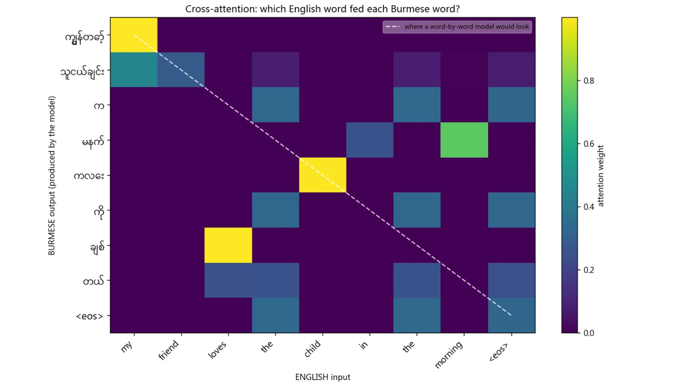
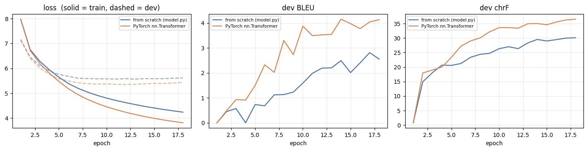

The encoder-decoder model from "Attention Is All You Need" (Vaswani et al., 2017), built only from basic PyTorch parts and trained to translate English into Burmese. It doesn't use nn.Transformer or nn.MultiheadAttention, because those are what the project recreates.
Can a Transformer written by hand from the paper match PyTorch’s own on English → Burmese?
What I built
The full encoder-decoder from basic PyTorch layers, with a custom BPE tokenizer and evaluation metrics.
Result
chrF 29.1 vs 33.5 at matched size, with the gap traced to a measured initialisation difference.
My role
Design, implementation, data pipeline, evaluation
Team
Individual project
Timeline
10 Aug – 5 Sep 2026
Stack
Python, PyTorch, custom BPE, Jupyter
python translate.py --attention

Problem
Can a Transformer written by hand, from the paper, actually learn to translate, and how close does it get to the reference implementation?
English to Burmese is a demanding test. English is subject-verb-object; Burmese is subject-object-verb and adds particles with no English counterpart. A model that copies words left to right would score zero, so attention has to do real reordering.
English input
Model output (Burmese)
i write the letter
ကျွန်တော် စာ ကို ရေး တယ်
the teacher does not eat fish
ဆရာ က ငါး ကို မ စား ဘူး
she will go to the market tomorrow
သူမ မနက်ဖြန် ဈေး ကို သွား မယ်
ကို marks the object and တယ် marks tense; neither appears in the English input. Examples from the generated corpus (Part 1).
Solution
Two stages: prove the architecture is correct on a controlled corpus, then train the same model on real human-translated text and compare it fairly against PyTorch's implementation.
Part 1 · Controlled corpusGenerated from a ~110-word bilingual lexicon and 12 Burmese grammar templates, to verify reordering and particles.
Part 2 · Real corpusALT English–Myanmar: 18,082 human-translated news pairs (CC BY 4.0).
Fair baselineSame network built from torch.nn.Transformer: same data, config, schedule and seed.
Readable codeEvery file runs on its own and prints what it's doing.
My contribution
Individual project: everything below is my work
Recreated the original Transformer: multi-head attention, masking, positional encoding, encoder and decoder stacks, and training.
Prepared 18,082 bilingual sentence pairs with data cleaning and byte-pair encoding.
Compared the model with the PyTorch Transformer baseline using BLEU and chrF, and investigated the performance difference.
Built from nn.Linear, nn.LayerNorm, nn.Dropout and nn.Embedding only.
Sinusoidal positional encoding, padding masks, look-ahead masks for the decoder, residual connections.
Cross-attention is the only place the English sentence enters the decoder; attention maps can be drawn with translate.py --attention.
Autoregressive generation one token at a time until <eos>.
Data processing
Deduplicated before splitting, with zero source overlap verified between train, dev and test.
Unicode NFC normalization, essential for Burmese (see below).
BPETokenizer exposes the same interface as the old word vocabulary, so the model and data loader didn't change.
13,237of 18,082 Burmese lines were not in canonical Unicode order
69%of Burmese word types appear only once
8,000BPE tokens instead of 63,887 word-level rows
Results & visuals
Real corpus: from scratch vs nn.Transformer
From scratch
nn.Transformer
chrF higher is better
29.1
33.5
ROUGE-L higher is better
23.5
26.5
METEOR higher is better
18.8
22.6
BLEU higher is better
2.0
3.6
0255075100
18 epochs · 16,199 training pairs · one laptop GPU · test set untouched until the end.
View all metrics as a table
Metric
From scratch
nn.Transformer
BLEU ↑
2.0
3.6
chrF ↑
29.1
33.5
TER ↓
100.0
92.8
ROUGE-L ↑
23.5
26.5
METEOR ↑
18.8
22.6
Length ratio (1.0 ideal)
1.11
1.02
Parameters
4,468,544
4,469,056
Training time
9.3 min
14.2 min
Part 1 · generated corpus
Random split
Compositional split
Test sentences
1,200
380
BLEU
99.8
99.7
Sentences exactly right
99.5%
98.9%
Training time
8.2 min
5.9 min

Training curves from notebook.ipynb, 18 epochs. Solid lines are train loss and dashed lines are dev loss. Both models learn steadily and dev loss flattens after the first epochs, while nn.Transformer stays ahead on BLEU and chrF.
Tracing the gap. The measured weight spread matches what Xavier initialisation predicts for each matrix shape. Packing Q, K and V into one 384×128 matrix changes the fan-in, so the from-scratch model starts with attention weights √2 wider.
Challenges & decisions
Burmese text silently split the vocabulary
Challenge
Burmese allows several storage orders for the same combining marks. They render identically, so 13,237 lines would have created duplicate "words".
Decision
Apply NFC normalization as an explicit, auditable pipeline stage.
Word-level vocabulary couldn't learn
Challenge
69% of Burmese word types appear once, and a word seen once can't be learned.
Decision
Implement BPE from scratch (no sentencepiece): 8,000 tokens instead of 63,887 rows, with an effectively zero unknown-token rate.
Why
The measurement, not a preference, drove the change.
The reference model scored higher. Why?
Finding
Both use Xavier initialisation, but my version keeps Q, K and V as three 128×128 layers while PyTorch packs them into one 384×128 matrix. Same rule, different fan-in, so my attention weights start √2 ≈ 1.414× wider.
Conclusion
Not a bug in either. The from-scratch model trains stably at a matched parameter count; the remaining gap is attributable to a specific, measured difference.
Lessons
99.7BLEU on the compositional split of the generated corpus
29.1chrF on real news text vs 33.5 for the reference
0.011%parameter difference between the two models
What I learned
The same architecture scores ~100 BLEU on a rule-generated corpus and ~2 on real language. That gap is exactly what a synthetic dataset hides.
For Burmese, chrF is the honest headline: the model produces substantially correct characters while rarely matching an exact 4-gram, which BLEU reports badly.
When a result disagrees with a reference, trace the cause and measure it instead of guessing.
What I'd improve next
Initialise Q/K/V with the packed fan and retrain, to confirm the gap closes.
Train on a larger parallel corpus; 16k pairs is very small for neural machine translation.